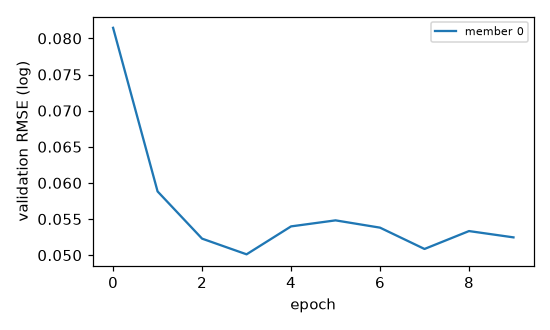
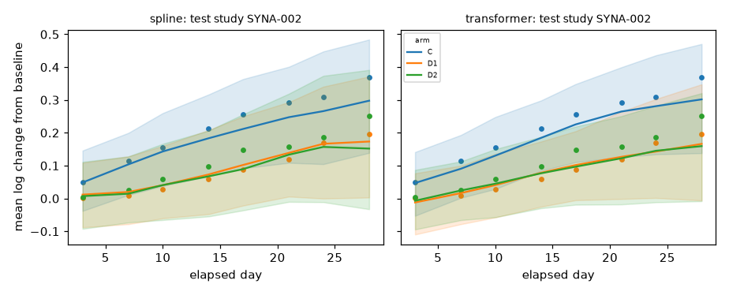

REAL-DATA RUN - qualification stage must be checked before any use
Body weight is the only modelled endpoint. Results cannot establish total animal requirements for a toxicology program, cannot justify reducing welfare observations or protocol checks, and are not regulatory-grade.
runs/v3_pilot_k0k1/k0/effective.yaml (hash 43575581e7be5616), seed 20261024| stage | status | seconds | key |
|---|---|---|---|
| evaluate | NA | 0.9 | NA |
| ingest | NA | 0.6 | 2665b0bc959b5441 |
| optional_models | {'chronos2': 'not_run', 'deepar': 'not_run', 'tft': 'not_run'} | NA | NA |
| prepare | NA | 0.2 | 1b47cd92c654e0fe |
| train_spline | trained | 0.5 | fcacbb15a24f0616 |
| train_transformer | trained | 2.2 | 384899ff8cfde5a8 |
Exclusion counts (animals):
| reason | n |
|---|---|
| species_out_of_scope | 170 |
| too_few_post_baseline_obs | 3 |
Limitations recorded during ingestion:
Mapping warnings by type: none
Frozen study-level splits: {'test': 3, 'test_compound_holdout': 1, 'train': 9, 'validation': 3} (hash 4797ef4589ea7e7f); compound holdout: ['CMP02']
Target-species manifests (frozen before donors): train n=9 hash cbdb10a6c2f1bfdf; validation n=3 hash 509b5d25bd90188b; test n=3 hash 04d76ef2e097f9ff. Sharing: context_specific; donors selected: 0.

| model | status | task | reason |
|---|---|---|---|
| chronos2 | not_run | secondary (early-history, zero-shot first; fine-tuning separate) | disabled in config |
| deepar | not_run | secondary (early-history forecasting) | disabled in config |
| tft | not_run | secondary (early-history forecasting) | disabled in config |
| model | split | studies | obs | RMSE log | RMSE g | MAE g | cov80 | cov95 | CRPS | SB RMSE | SB cov95 | energy | grp-mean cov90 | contrast cov90 | contrast bias | var ratio | incr ratio | max cov90 |
|---|---|---|---|---|---|---|---|---|---|---|---|---|---|---|---|---|---|---|
| spline | test_compound_holdout | 1 | 389 | 0.164 | 74.705 | 58.877 | 0.990 | 1.000 | 0.100 | 0.164 | 1.000 | 0.318 | 1.000 | 1.000 | 0.242 | 2.745 | 4.816 | 1.000 |
| spline | test | 3 | 774 | 0.059 | 16.992 | 12.419 | 0.999 | 1.000 | 0.040 | 0.061 | 1.000 | 0.116 | 1.000 | 1.000 | -0.011 | 2.947 | 1.931 | 1.000 |
| transformer | test_compound_holdout | 1 | 389 | 0.052 | 14.384 | 10.856 | 0.997 | 1.000 | 0.036 | 0.052 | 1.000 | 0.116 | 1.000 | 0.750 | 0.066 | 2.799 | 1.649 | 1.000 |
| transformer | test | 3 | 774 | 0.057 | 17.190 | 12.400 | 0.997 | 1.000 | 0.038 | 0.054 | 1.000 | 0.107 | 1.000 | 1.000 | 0.041 | 2.990 | 1.798 | 1.000 |
SB = study-balanced. Coverage targets: cov80=0.80, cov95=0.95, group-mean/contrast/max cov90=0.90; variance and increment ratios target 1. Few test studies -> wide uncertainty.
Residual correlation by gap (observed vs predicted):
| model | split | gap_bin | corr_obs | corr_pred | n_pairs |
|---|---|---|---|---|---|
| spline | test_compound_holdout | (0,4] | 0.904 | 0.888 | 7 |
| spline | test_compound_holdout | (4,8] | 0.854 | 0.821 | 6 |
| spline | test_compound_holdout | (8,15] | 0.785 | 0.732 | 9 |
| spline | test_compound_holdout | (15,100] | 0.606 | 0.577 | 6 |
| spline | test | (0,4] | 0.901 | 0.878 | 14 |
| spline | test | (4,8] | 0.840 | 0.817 | 15 |
| spline | test | (8,15] | 0.749 | 0.725 | 20 |
| spline | test | (15,100] | 0.595 | 0.571 | 13 |
| transformer | test_compound_holdout | (0,4] | 0.904 | 0.889 | 7 |
| transformer | test_compound_holdout | (4,8] | 0.854 | 0.826 | 6 |
| transformer | test_compound_holdout | (8,15] | 0.785 | 0.753 | 9 |
| transformer | test_compound_holdout | (15,100] | 0.606 | 0.633 | 6 |
| transformer | test | (0,4] | 0.901 | 0.874 | 14 |
| transformer | test | (4,8] | 0.840 | 0.800 | 15 |
| transformer | test | (8,15] | 0.749 | 0.716 | 20 |
| transformer | test | (15,100] | 0.595 | 0.575 | 13 |
(none)
Success on the secondary task does not establish success on the primary task.

Design stage not run.